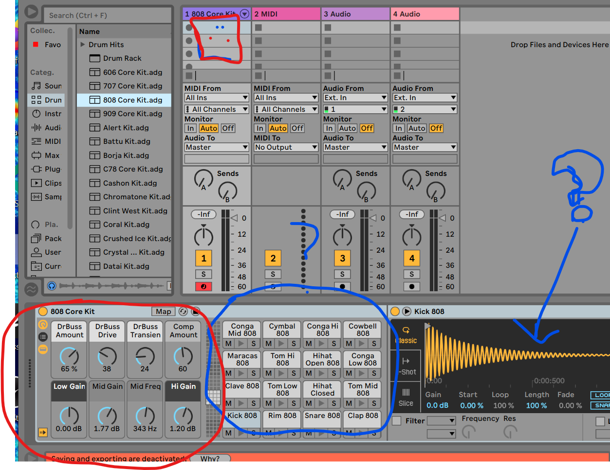
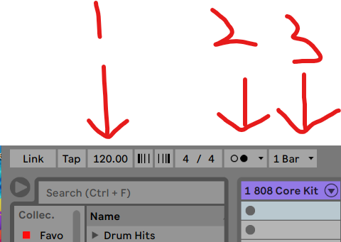
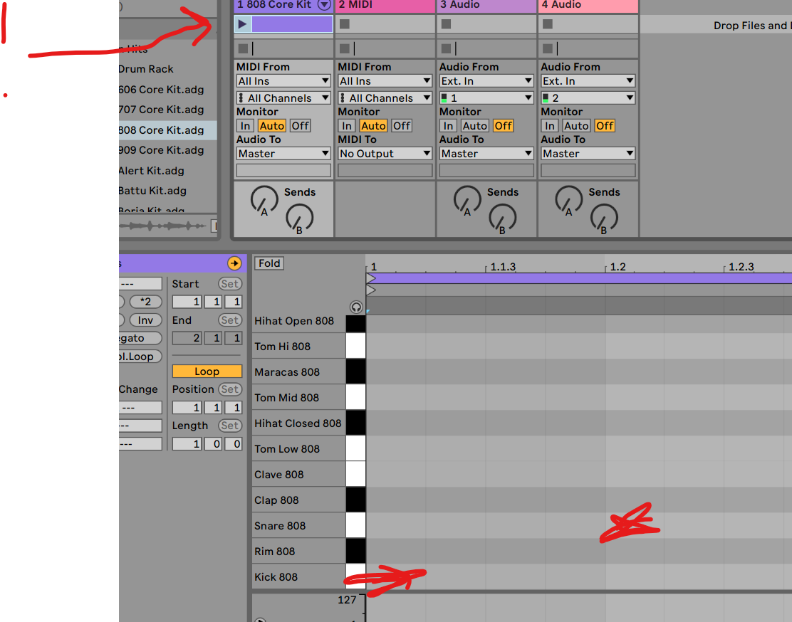
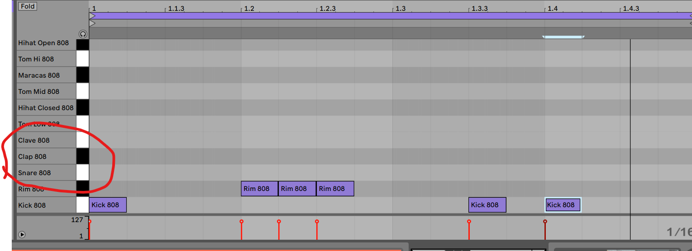
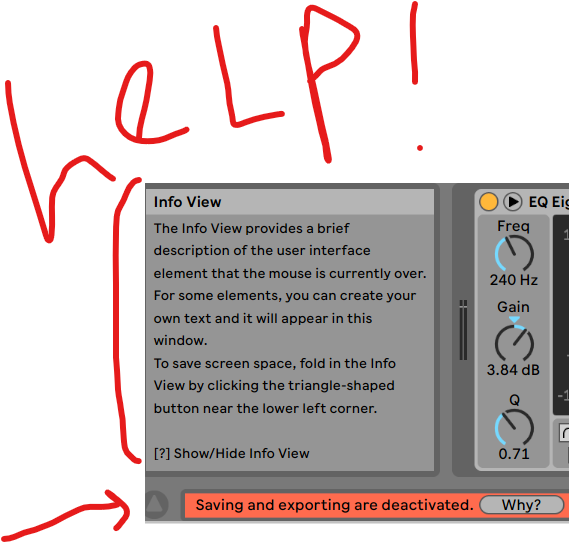
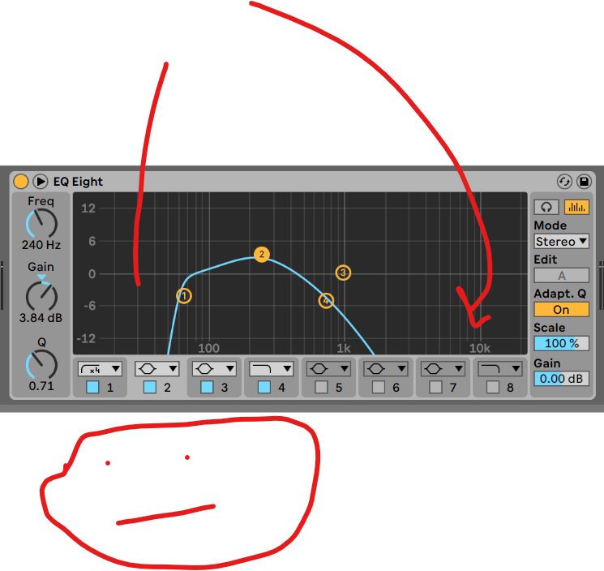

2
 put drums into midi
put drums into midi3whats this?
4tempo (bpm), metronome (click), whats this?
5make a "clip" in the drum channel, draw yo drumz
6 where should the snare go?  ??
7 don't forget theres a help box and tutorial (where?!)
8do the eq (audio effect!)